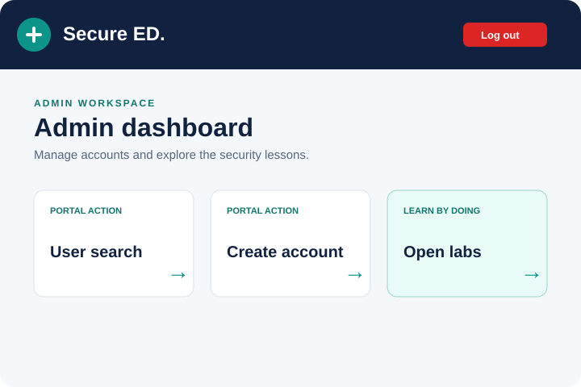

Weak password recovery
See how a predictable reset flow can let an attacker choose a new password without a secret token.
A small portal with a visible lesson inside it
SecureEd is a PHP and SQLite student portal designed for hands-on security learning. Follow a normal account flow, open a focused lab, and see exactly where an insecure assumption changes the outcome.

Three focused exercises
See how a predictable reset flow can let an attacker choose a new password without a secret token.
Simulate an old session and observe what happens when protected pages only check that it exists.
Choose a known session ID and watch it remain attached after login when regeneration is omitted.
Start in two minutes
From the repository root, start Docker and open the local portal. The database is seeded at startup for repeatable classroom exercises.
docker compose up --build
# open http://localhost:8000